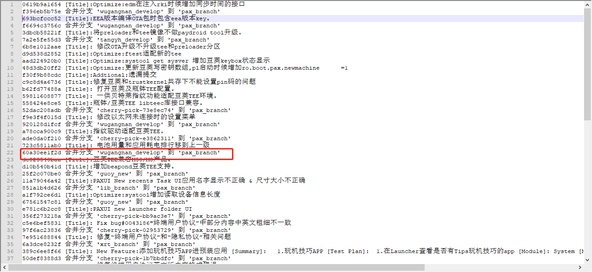
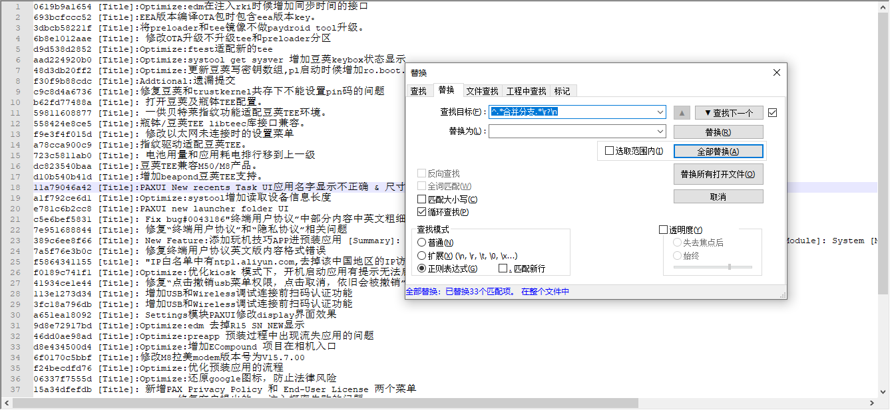
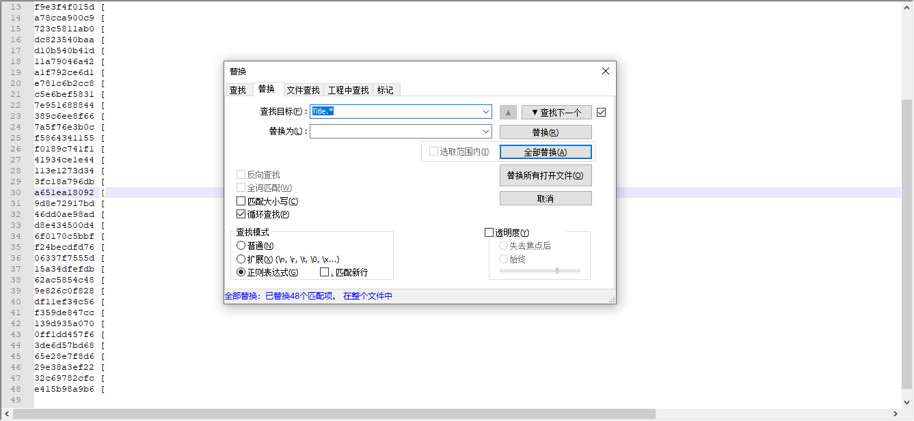
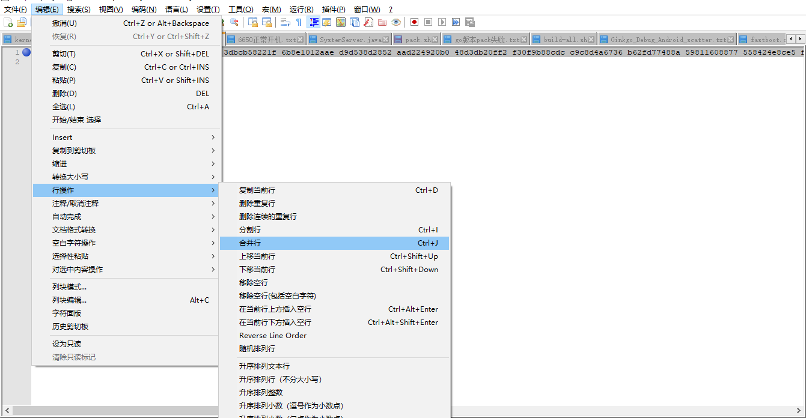

常用git操作汇总
总结以下常用的git命令
cherry-pick技巧
git cherry-pick
:单独合并一个提交 git cherry-pick -x
：同上，不同点：保留原提交者信息。 如果有100个commit要合并到master分支呢？
git cherry-pick commit1..commit100
但是要注意，这是一个左开右闭的操作，也就是说，commit1不会被合并到master分支，而commit100则会。这样的话上面的需求可以如下操作来实现：
注意：上面讲到cherry-pick命令每拣选一个commit就会提交一次生成一个新的commit id。 如果我们想让每个commit 拣选后暂缓提交，等到所有commit都拣选完成后，自己手动commit，应该怎么办呢？答案是用-n 选项。
cherry-pick挑选中间几个
git log –oneline -100 origin/pax_branch

需要使用正则
^.*合并分支.*\r?\n删除合并选项：

正则
Title.*去除每行Title字符串后面的内容:

使用notepad合并行功能，多列变一行：

出现合并冲突：
wugn@jcrj-tf-compile:M8-project$ git cherry-pick 0619b9a1654 693bcfccc52 3dbcb58221f 6b8e1012aae d9d538d2852 aad224920b0 48d3db20ff2 f30f9b88cdc c9c8d4a6736 b62fd77488a 59811608877 558424e8ce5 f9e3f4f015d a78cca900c9 723c5811ab0 dc823540baa d10b540b41d 11a79046a42 a1f792ce6d1 e781c6b2cc8 c5e6bef5831 7e951688844 389c6ee8f66 7a5f76e3b0c f5864341155 f0189c741f1 41934ce1e44 113e1273d34 3fc18a796db a651ea18092 9d8e72917bd 46dd0ae98ad d8e434500d4 6f0170c5bbf f24becdfd76 06337f7555d 15a34dfefdb 62ac5854c48 9e826c0f828 df11ef34c56 f359de847cc 139d935a070 0ff1dd457f6 3de6d57bd68 65e28e7f8d6 29e38a3ef22 32c69782cfc e415b98a9b6
Performing inexact rename detection: 100% (1188/1188), done.
error: could not apply 0619b9a1654... [Title]:Optimize:edm在注入rki时候增加同步时间的接口
hint: after resolving the conflicts, mark the corrected paths
hint: with 'git add <paths>' or 'git rm <paths>'
hint: and commit the result with 'git commit'
git diff :
--- a/paxdroid/packages/apps/edm/Android.mk
+++ b/paxdroid/packages/apps/edm/Android.mk
@@@ -7,7 -7,7 +7,11 @@@ LOCAL_MODULE_SUFFIX := $(COMMON_ANDROID
#LOCAL_PRIVILEGED_MODULE :=
LOCAL_PRODUCT_MODULE := true
LOCAL_CERTIFICATE := platform
++<<<<<<< HEAD
+LOCAL_SRC_FILES := EDM_V2.00.00_20220809_release.apk
++=======
+ LOCAL_SRC_FILES := EDM_V2.00.00_20221024_release.apk
++>>>>>>> 0619b9a1654... [Title]:Optimize:edm在注入rki时候增加同步时间的接口
LOCAL_MODULE_PATH := $(TARGET_OUT_VENDOR)/operator/app
LOCAL_DEX_PREOPT := false
#LOCAL_REQUIRED_MODULES :=
* Unmerged path paxdroid/packages/apps/edm/EDM_V2.00.00_20220809_release.apk
* Unmerged path paxdroid/packages/apps/edm/EDM_V2.00.00_20220923_release.apk
* Unmerged path paxdroid/packages/apps/edm/EDM_V2.00.00_20221024_release.apk
解决第一个冲突后添加：
wugn@jcrj-tf-compile:M8-project$ rm paxdroid/packages/apps/edm/EDM_V2.00.00_20220809_release.apk
wugn@jcrj-tf-compile:M8-project$ rm paxdroid/packages/apps/edm/EDM_V2.00.00_20220923_release.apk
git add paxdroid/packages/apps/edm
git commit:
wugn@jcrj-tf-compile:M8-project$ git commit
[product e7c56eaa002] [Title]:Optimize:edm在注入rki时候增加同步时间的接口
Author: lib <lib@paxsz.com>
Date: Mon Oct 24 23:37:33 2022 +0800
4 files changed, 1 insertion(+), 1 deletion(-)
rename paxdroid/packages/apps/edm/{EDM_V2.00.00_20220809_release.apk => EDM_V2.00.00_20221024_release.apk} (88%)
create mode 100755 paxdroid/packages/apps/edm/EDM_V2.00.00_20221026_release.apk
create mode 100755 paxdroid/packages/apps/edm/edmsource/common_lib/libs/libusbmonitor_20221022094026.jar
git cherry-pick –continue:
wugn@jcrj-tf-compile:M8-project$ git cherry-pick --continue
[product 4de6948cd26] [Title]:EEA版本编译OTA包时包含eea版本key。
Date: Mon Oct 24 12:37:36 2022 +0800
2 files changed, 28 insertions(+)
error: could not apply 3dbcb58221f... [Title]:将preloader和tee镜像不做paydroid tool升级。
hint: after resolving the conflicts, mark the corrected paths
hint: with 'git add <paths>' or 'git rm <paths>'
hint: and commit the result with 'git commit'
wugn@jcrj-tf-compile:M8-project$ vim vendor/mediatek/proprietary/buildinfo_vnd/label.ini
wugn@jcrj-tf-compile:M8-project$ vim vendor/mediatek/proprietary/buildinfo_vnd/label_eea.ini
wugn@jcrj-tf-compile:M8-project$ git add vendor/mediatek/proprietary/buildinfo_vnd
wugn@jcrj-tf-compile:M8-project$ git commit
[product 73f6417b816] [Title]:将preloader和tee镜像不做paydroid tool升级。
Date: Sat Oct 22 16:31:03 2022 +0800
11 files changed, 40 insertions(+), 12 deletions(-)
create mode 100755 selfbuild_modem
一个一个的修改就好了。